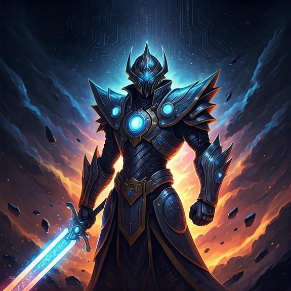

-
Cosmos Sentinel, o Guardião Galáctico

Este imponente guerreiro cibernético é a perfeita harmonia entre tecnologia avançada e energia cósmica. Empunhando um cetro estelar, Comos Sentinel pode manipular o espaço-tempo, anulando ataques e fortalecendo aliados.
ATK/ 2800 DEF/ 2500 -
Nebuladragon, O Ser Das Estrelas Eternas

Uma criatura mítica nascida da fusão de nebulosas e energia estelar. Com suas escamas cristalinas, Nebuladragon canaliza o poder do cosmos, devastandos seus inimgos com energia pura. Diz-se que ele aparece apenas em momentos de caos universal, como arauto de renovação e equilíbrio celestial.
ATK/ 3200 DEF/ 2000 -
Cyberblade Paladin, O Cavaleiro Cibernético

Armado com a lendária Cyberblade, este cavaleiro cibernético é um protetor das dimensões digitais. Com reflexos aprimorados e um senso de justiça inabalável, ele combate invasores que ameaçam o equilíbrio dos mundos virtuais e reais. Sua espada emana um brilho tecnológico que pode cortar tanto matéria física quanto código digital.
ATK/ 2600 DEF/ 2300 -
Mechadragon X, O Detruidor Biomecânico

Uma fusão mortal de biologia dracônica e engenharia cibernética, Mechadragon X foi criado para ser uma arma definitiva. Com suas asas energizadas e múltiplos núcleos de poder, ele é capaz de disparar rajadas devastadoras e neutralizar até os mais fortes adversários. Sua presença no campo de batalha é um presságio de destruição iminente, conhecido como o "Fim das Eras".
ATK/ 3500 DEF/ 3000 -
Archmage Stellarion, O Guardião Das Estrelas

Um mago enigmático que manipula as forças do cosmos para proteger o equilíbrio universal. Archmage Stellarion utiliza seu Cetro Cósmico para canalizar feitiços de luz estelar, podendo banir inimigos para dimensões distantes ou fortalecer aliados com energia astral. Sua presença no campo de batalha é envolta em mistério e poder, sendo reverenciado como o "Sábio do Infinito".
ATK/ 2400 DEF/ 2600 -
Aegis Knight, O Guardião Do Firmamento

Vestindo uma armadura forjada com fragmentos de estrelas, Aegis Knight é o defensor final das dimensões. Empunhando a Espada Astral e o Escudo Celestial, ele possui o poder de anular ataques inimigos e contra-atacar com golpes de pura energia cósmica. Seu juramento é proteger o equilíbrio entre luz e trevas, sendo lembrado como a "Fortaleza do Cosmos"
ATK/ 3000 DEF/ 2800 -
Stormbringer Dragon, O Arauto Das Tempestades

Este poderoso dragão domina os céus, invocando trovões e relâmpagos com o bater de suas asas. Stormbringer Dragon é a personificação da fúria da natureza, destruindo tudo em seu caminho com rajadas elétricas e ventos cortantes. Diz-se que sua aparição é o prelúdio de uma tempestade sem fim, trazendo destruição e renovação aos campos de batalha.
ATK/ 2900 DEF/ 2100 -
Solarium, O Guardião Do Nexus Estelar
Um lendário guerreiro cósmico forjado no núcleo de uma supernova. Sua armadura de luz pulsante reflete o brilho de mil estrelas, enquanto sua espada energética, 'Lâmina Solar', canaliza o poder de sistemas solares inteiros. Mestre em artes antigas e tecnologia avançada, Solarium protege o equilíbrio entre os mundos míticos e cibernéticos, erguendo-se como uma figura de esperança em meio às trevas do cosmos.
ATK/ 3600 DEF/ 2700 -
Nytherion, O Arquivista Do Nexus Estelar
O guardião do Nexus do Conhecimento Cósmico, uma entidade nascida da fusão entre magia e tecnologia no colapso de uma supernova. Envolto em um manto de estrelas e runas vivas, ele maneja o 'Orbe do Infinito', um bastão capaz de manipular tempo e realidades. Observador neutro do equilíbrio cósmico, Nytherion concede sua sabedoria apenas àqueles dignos, enquanto seu poder é capaz de moldar o destino do universo.
ATK/ 3400 DEF/ 3500 -
Eryon, O Guardião Do Nexus Luminar

Encarnação da pureza e do equilíbrio energético no cosmos. Ele empunha uma lança translúcida chamada "Prisma do Infinito", capaz de canalizar e redistribuir energia cósmica, seja para criar vida ou desfazer forças destrutivas. Mediador entre Solarium e Nytherion, mantendo o fluxo energético do Nexus Estelar em equilíbrio absoluto. Garantindo a preservação da harmonia universal.
ATK/ 4000 DEF/ 3000